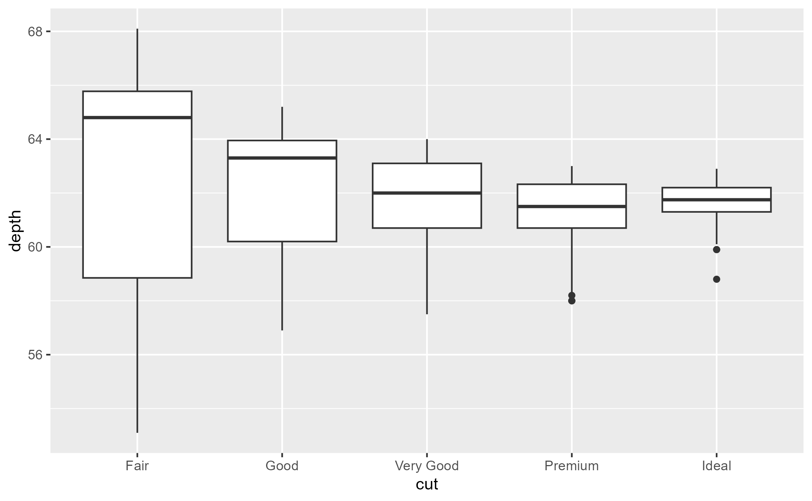
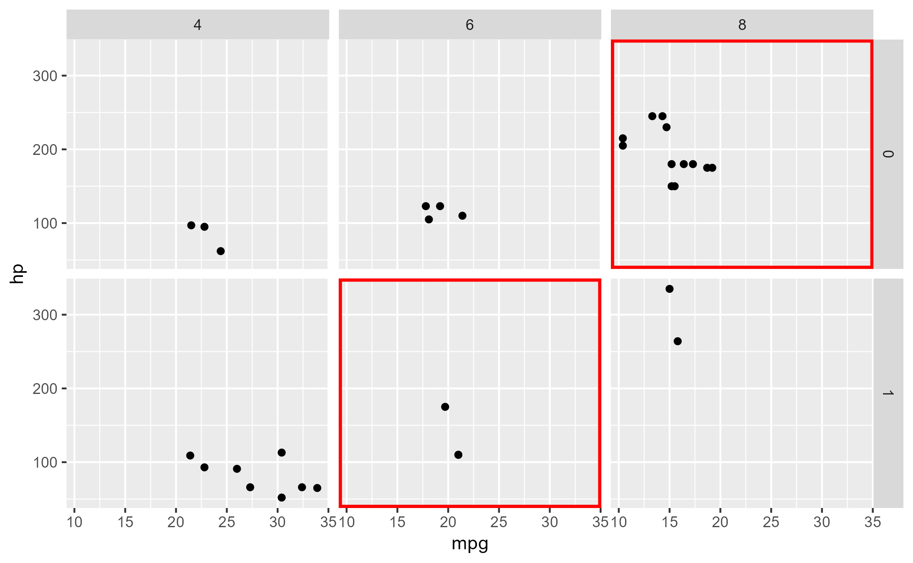
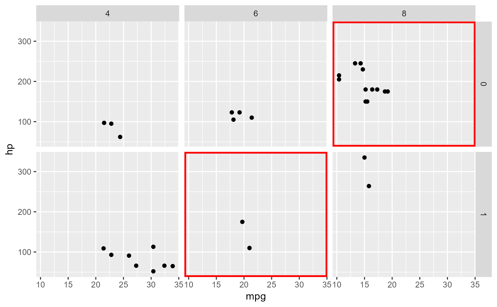

Generic workflow function which localizes a ggtrace call to a single ggplot object
Source:R/with_ggtrace.R
with_ggtrace.Rdwith_ggtrace() provides a functional interface to ggtrace(). It takes a ggplot object
and parameters passed to ggtrace() and returns the immediate tracedump and/or graphical
output without side effects.
Usage
with_ggtrace(x, method, ..., out = c("tracedump", "gtable", "both"))Arguments
- x
A ggplot object whose evaluation triggers the trace as specified by the
...- method
A function or a ggproto method. The ggproto method may be specified using any of the following forms:
ggproto$methodnamespace::ggproto$methodnamespace:::ggproto$method
- ...
Arguments passed on to
ggtracetrace_stepsA sorted numeric vector of positions in the method's body to trace. Negative indices reference steps from the last, where
-1references the last step in the body. Special value"all"traces all steps of the method body.trace_exprsA list of expressions to evaluate at each position specified in
trace_steps. If a single expression is provided, it is recycled to match the length oftrace_steps.To simply run a step and return its output, you can use the
~stepkeyword. If the step is an assign expression, the value of the assigned variable is returned. Iftrace_exprsis not provided,ggtrace()is called with~stepby default.onceWhether to
untrace()the method on exit. IfFALSE, creates a persistent trace which is active untilgguntrace()is called on the method. Defaults toTRUE.use_namesWhether the trace dump should use the names from
trace_exprs. Iftrace_exprsis not specified, whether to use the method steps as names. Defaults toTRUE.print_outputWhether to
print()the output of each expression to the console. Defaults toTRUE.verboseWhether logs should be printed when trace is triggered. Encompasses
print_output, meaning thatverbose = FALSEalso triggers the effect ofprint_output = FALSEby consequence. Defaults toFALSE.
- out
Whether the function should return the output of triggered traces ("tracedump"), or the resulting graphical object from evaluating the ggplot ("gtable"), or "both", which returns the tracedump but also renders the resulting plot as a side effect. Partial matching is supported, so these options could also be specified as "t", "g", or "b". Defaults to "tracedump".
Examples
library(ggplot2)
# Long-form `ggtrace()` method:
boxplot_plot <- ggplot(diamonds[1:500,], aes(cut, depth)) + geom_boxplot()
ggtrace(
method = StatBoxplot$compute_group,
trace_steps = -1, trace_exprs = quote(~step)
)
#> `StatBoxplot$compute_group` now being traced.
boxplot_plot
#> Triggering trace on `StatBoxplot$compute_group`
#> Untracing `StatBoxplot$compute_group` on exit.

first_tracedump <- last_ggtrace()
# Short-form functional `with_ggtrace()` method:
second_tracedump <- with_ggtrace(
x = boxplot_plot,
method = StatBoxplot$compute_group,
trace_steps = -1, trace_exprs = quote(~step)
)
identical(first_tracedump, second_tracedump)
#> [1] TRUE
# An example with `out = "gtable"` (or `"g"`)
grid_plot <- ggplot(mtcars, aes(mpg, hp)) +
geom_point() +
facet_grid(am ~ cyl)
grid_plot
 outline <- grid::rectGrob(
x = 0.5, y = 0.5, width = 1, height = 1,
gp = grid::gpar(col = "red", lwd = 5, fill = NA)
)
with_ggtrace(
x = grid_plot,
method = Layout$render,
trace_steps = 5,
trace_exprs = rlang::expr({
panels[c(3, 5)] <- lapply(panels[c(3, 5)], function(panel) {
gTree(children = gList(panel, !!outline))
})
}),
out = "gtable" # or "g"
)

outline <- grid::rectGrob(
x = 0.5, y = 0.5, width = 1, height = 1,
gp = grid::gpar(col = "red", lwd = 5, fill = NA)
)
with_ggtrace(
x = grid_plot,
method = Layout$render,
trace_steps = 5,
trace_exprs = rlang::expr({
panels[c(3, 5)] <- lapply(panels[c(3, 5)], function(panel) {
gTree(children = gList(panel, !!outline))
})
}),
out = "gtable" # or "g"
)
